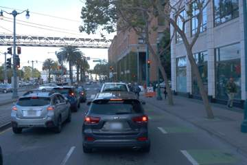
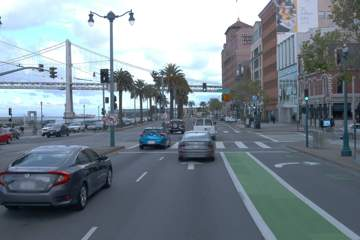

Two selected front-camera frames illustrate the environments in our multimodal perception research cohort. We are investigating detection and segmentation separately, with geometry and sensor alignment as foundational checks.

Selected scene A. Camera appearance provides context for investigating road users and their spatial relationships.

Selected scene B. A second environment illustrates why class coverage must span several scenes rather than one repeated batch.
These are small illustrative extracts, not model predictions or evidence that a training milestone has passed.